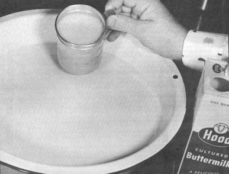
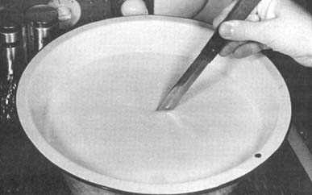
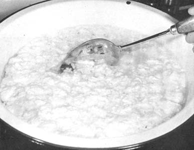
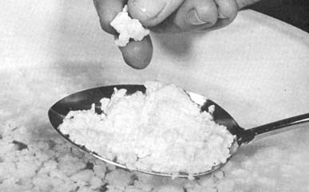
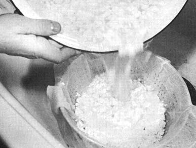
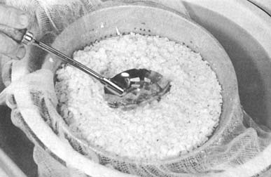
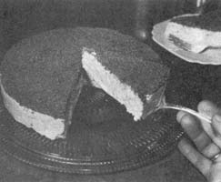

You can turn that surplus homestead milk-after the calf has been weaned and ole Bossie seems more productive than ever-into nutritious cottage cheese that's rich in proteins, minerals and vitamins and free from harmful additives or preservatives. If your milk comes from the supermarket in cardboard containers, you can perform the same trick in smaller quantities any time of the year. Either way, you'll produce cottage cheese right in your own kitchen with a minimum investment of time, effort and expense . . . and after you've whipped together two or three batches, you'll find it no more trouble than preparing a favorite dessert.
Cottage cheese, in reality, is nothing more than unripened cheese formed by the natural action of lactic acid (with or without the help of a milk curdling agent called rennet). Correctly made, this dairy product is highly digestible and-as might be expected-the home-produced variety has a tantalizingly mild-acid flavor that is far superior to the taste of commercial brands.
Four things are extremely important to the production of noteworthy cottage cheese: (1) clean utensils, (2) fresh skim milk of good quality, (3) fresh buttermilk and (4) proper techniques.
You most likely have everything you need for making cottage cheese right in your own kitchen . . . and what you don't have you can improvise. Just bear in mind that the lactic acid (formed when milk sours) may be relatively mild, but is an acid nevertheless. It's best to make sure your cheese-making containers are stainless steel, enamelware, tinned or otherwise acid resistant.
You'll need a large double boiler (or one pot you can put on a rack inside a larger kettle), a good-sized strainer or food colander (cover the latter with two thicknesses of cheesecloth), an accurate thermometer (one of the special floating dairy models-available from a hardware store-is best, but any reliable household thermometer that reads from 35 to 170°F will do), a perforated stirring spoon or wooden ladle, a timer and a large kitchen knife.
If you're starting your cheese making with fresh, whole milk you'll first have to separate the liquid into cream and skim milk. A good, old-fashioned cream separator will accomplish that task in minutes and I envy you if you have one. I don't, so I store our cow's production in the refrigerator until the cream rises and I can carefully skim it off. This cream is then set aside and later added to the finished cheese.
Although raw-or non-pasteurized-skim milk can be used for cottage cheese, pasteurized milk seems to control the souring process (thereby producing a cheese of more uniform taste and keeping quality) and is to be preferred.
You can pasteurize raw milk (either whole or skim) by slowly heating it to 143°F in a double boiler. Maintain the liquid at this temperature for 30 minutes (frequent stirring will help produce a more uniform temperature), remove it from the stove and cool. A word of caution: do not overheat skim milk during pasteurization or it will form into a soft curd that is practically impossible to firm later into cheese.
Your freshly pasteurized skim milk is ready to be turned into cottage cheese just as soon as, it cools to 75°F. If you must put off your cheese making until another day, however, keep the milk in refrigerated, covered containers (uncovered milk quickly absorbs odors) until the very moment you're ready to begin. Remember that superior cottage cheese cannot be made from milk of poor quality or from skim milk that has not been properly cared for.
A buttermilk culture is absolutely essential for transforming pasteurized skim milk into cottage cheese. The culture is of somewhat less importance when the cheese is made from raw skim milk (which contains enough bacteria to sour readily) but-even sowill hasten coagulation, prevent the formation of gas caused by other bacteria in the fluid and improve the flavor of the finished product. Use your own fresh, homemade buttermilk for cheese making or buy some of the fresh, cultured liquid from your local dairy.
There are only eight major steps in the production of cottage cheese and, if you follow them carefully, your very first batch should turn out just fine. Make certain you have all necessary pots and utensils close at hand and let's begin:
1. Coagulate your pasteurized skim milk by bringing its temperature up to 75°F and stirring one-half cup (4 ounces) of fresh cultured buttermilk into each gallon of the fluid. Cover the container with a clean, loose-fitting lid and hold the liquid at 75°F until it forms into a good, thick mass with a slight amount of whey on its surface. This should take about 24 hours.
Raw skim milk, as I've mentioned, will sour without the addition of a culture if warmed to 75°F for 24 hours but-due to the random bacteria it sometimes contains-will also occasionally disappoint you with off flavors and funny textures when left to work on its own. It's better to play it safe and start each gallon of the raw fluid with a half-cup of fresh buttermilk just as you start pasteurized skim milk.
2. When the coagulated milk is as thick as custard pudding, cut the curd into one-half to one-inch cubes by passing a large kitchen knife vertically through the thickened fluid crosswise and lengthwise all the way to the bottom of the pot.
Allow the cut curd to rest undisturbed for 15 minutes and then place the container into a larger vessel of water that has been heated to 115 or 120°F. This heating will shrink, firm and separate the curd from the whey and is very important. Excessive temperatures will cause the curds to mat and - for best consistency-the jelling cheese must be heated slowly and as uniformly as possible. You'll realize best results if you maintain the level of the warm water in the larger container slightly higher than the surface of the curd and whey in the inside pot.
3. The developing cheese should be stirred somewhat during this heating to prevent the curds from matting excessively and to help spread the warmth throughout the solidifying mass. This stirring should be done very gently, however, and kept at a minimum. Try not to break the curds. A good practice is to stir gently with a perforated spoon or wooden ladle for only one minute at a time at five-minute intervals throughout the heating process.
4. Check the temperature of the mixture often. When it reaches 100°F, increase the heat under the container of water until a thermometer stuck in the jelling cheese registers 120°F. At that point the curds can be stirred more frequently while you hold their temperature at the higher level for 25 minutes or until the bits of cheese are too firm to break easily. The curd is not firm enough and still requires cooking if a chunk contains enough moisture to appear glossy inside when broken open with the fingers.
5. When the curd has firmed sufficiently, pour it into a large colander (covered with two thicknesses of cheesecloth) or strainer and drain off the whey.
6. The cooling curds should be allowed to drain five minutes and then should be washed twice to remove the acid whey and leave the finished cheese firm, hard and mild in flavor. This washing will not increase the moisture content of the cheese at all so don't be afraid to really douse the curds. Wash them in twice their volume of water both times you cleanse them.
The first washing should cool the curds to about 80°F and remove any remaining sour whey if the ends of the cheesecloth are gathered . . . and colander and all is immersed into a deep pan of 70-80° water for approximately three minutes. If a strainer (instead of colander) is used, gently sink the container into the water until the curd is covered and work the cheese lightly with a spoon as it cools.
The partially-cooled curd is then immersed into a second wash water in the same manner. This bath should be 50°F or cooler (I use ice water) and the lower temperature will check the souring process and chill the cheese enough so that it may be immediately refrigerated or frozen.
7. Let the washed curd drain for half an hour, then place it in a bowl and add (if you so desire) one teaspoon of salt to each pound of cheese. If you expect to eat the cottage cheese within a week, keep it in the refrigerator (35°F is the best storage temperature) until it's needed.
You may also freeze your new cheese for long periods of time if you first compress and chill it and wrap it in aluminum foil. Do this by putting the drained (and salted, if you prefer) curds back into the cheesecloth and leaving just a little slack so it can spread out) tying the fabric shut around the ball of cheese. Then place something flat and heavy (such as a good-sized cutting board) on the bundle and press the cheese down into a hard, flat disk about one inch thick, depending on how much you've made. Leave the disk in the refrigerator or a very cold room overnight.
In the morning, gently remove the compressed cheese from the cloth and wrap it in heavy aluminum foil or place it in a round refrigerator container. You can then freeze it for future use or store it in the refrigerator to be eaten as desired.
I've kept cottage cheese disks in my freezer for as long as three months and-after thawing them for four hours at room temperature-found them just as moist and delicious as the day they were made. The slabs of cheese are very firm and, once thawed, can be sliced much like processed cheese. They can also be crumbled and mixed with cream to make creamed cottage cheese . . . or used in pies, cakes and other nutritious desserts.
8. If you wish to cream your cheese at the time it's made, add one-fourth to one-half cup of either sweet or sour cream to each pound of curds after they've been washed and drained. Creaming cottage cheese greatly improves its flavor and palatability . . . and turns it into a highly perishable product that must be consumed very quickly. If you find yourself with more of the creamed variety than you can eat in a day or two, place the excess (don't press it or you'll lose the cream!) in a container and freeze it.
Your freshly made curd should look like new-popped popcorn, be meaty in consistency and have a tantalizingly mild-acid flavor that won't let you quit eating until you've consumed at least a pint. If the cheese has been properly heated and drained, its firmness will be "just right" and it will contain about 75% moisture. You can always dampen the product a little with milk or cream if you desire and how much of either you add depends upon what you intend to use it for and the way your family likes it.
Occasionally, no matter how careful you are, you may run into a little trouble when you make cottage cheese. It won't happen too often (maybe never if you always take care to heed the eight steps outlined above) . . . but if it does come to pass that you're not too pleased with a batch of your curd, check it against the following causes of unsatisfactory cheese:
1. An unpleasant sour flavor may be due to the use of inferior milk, excessive acid development, retention of too much whey in the curd, lack of firming, improper washing or insufficient draining. Any one or a combination of these causes can produce this problem, which, is not really a major one because the sour taste can often be disguised with cream or salt.
2. Yeasty or fermented flavors are caused by bacteria, molds or yeasts in or on the curd. The troublemakers are usually traced to inferior milk, cream or culture or to the use of unclean pots and utensils. Lack of sufficient chilling before putting the cheese into the refrigerator, holding the curd at temperatures above 40°F and keeping the cheese too long before use are other causes.
3. An unclean flavor can also be created by unsatisfactory storing conditions or inferior milk, cream and culture.
4. Field or feed odors are usually caused by such odors in the milk from which a batch of cheese was made. They're unpleasant but they don't render the curd unfit for use. Kill this problem at the source by tasting any milk you plan to turn into cheese.
5. A dry or too-hard curd indicates lack of sufficient moisture because the particles of cheese broke down too small during forming, the curd was overheated during firming, the cheese drained too long after being washed with cold water or not enough cream was added to the finished curd. The condition, however, is favorable if you wish to press the cheese into a disk for freezing or slicing.
6. Soft, sticky or pasty curds are the result of too much moisture . . . attributable to the development of too much acid, oversized curd particles, rapid heating, soft centers in the curd and/or insufficient firming of the cheese before removing it from the stove.
7. Milk may fail to sour and coagulate properly because:
(a) the buttermilk is too old,
(b) not enough fresh buttermilk culture is added to the milk,
(c) the culture and skim milk is held at too low a temperature for too short a time,
(d) the milk came from a cow recently treated (within 5-to 7 days) with antibiotics-such as penicillin-for an udder infection.
Your chances, again, of ever running into one of these problems are slight . . . but there they are. Don't let them scare you because making cottage cheese in your own kitchen is actually quite simple and easy . . . and once you've discovered how good homemade curd can be, you'll never buy it in a store again!
|
 PHOTOS BY J. F. MICHAJLUK Use fresh cultured buttermilk to coagulate pasteurized skim milk (the buttermilk will also do wonders for raw skim milk). Use one-half cup of the culture per gallon of milk, stir in well and place the mixture in a warm place for 24 hours. |
 PHOTOS BY J. F. MICHAJLUK After a good coagulation has occurred, cut the curd into one-half to one-inch cubes by passing a long knife vertically (both crosswise and lengthwise) through the jelling milk. This sets the size of the final curd. |
 PHOTOS BY J. F. MICHAJLUK Hold stirring to a minimum during the heating process and try not to break the curd. A gentle one-minute stir at five-minute intervals works best for me. |
|
 PHOTOS BY J. F. MICHAJLUK When the curd of your developing cheese is about ready, check it by breaking one of the particles with your fingers. If it's still too moist, it will appear glossy inside and should be cooked a little longer. The curds will hold their form when done, look like new-popped popcorn and have a meaty consistency. |
 PHOTOS BY J. F. MICHAJLUK When the cheese has firmed sufficiently, pour the curds and whey into a colander draped with cheesecloth or into a large strainer. Keep your face back as you do this because the steam can be very hot. |
 PHOTOS BY J. F. MICHAJLUK Take care to follow the directions given in the text for washing your new batch of cottage cheese. Your final results depend directly on how the curds are rinsed and cooled. Use plenty of water at the right temperature and always stir gently. |
|
 PHOTOS BY J. F. MICHAJLUK |
|
|